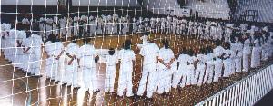
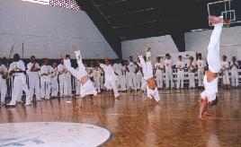

Galeria
![[Nome da Atividade] - Imagem 1](./images/atividades/capoeira-mistica/capoeira_foto_salto1.jpg)

![[Nome da Atividade] - Imagem 3](./images/atividades/capoeira-mistica/capoeira_foto_salto3.jpg)

É a festa que resgata o sentimento comunitário, tribal, proporcionando a terapia da amizade e da ética amorosa. Portanto, é atividade que atrai e concentra as energias boas e terapêuticas do universo cósmico.
Participe desta atividade
Jorge Melchiades Carvalho Filho nasceu em Sorocaba/SP, no ano de 1940, na Vila Leão, e foi o pioneiro no ensino da capoeira na cidade e, talvez, no interior do Estado. Ele passou a infância engraxando sapatos e vendendo jornais nas ruas e praças centrais, mas precisava brigar quase todos os dias para se defender dos engraxates maiores e mais fortes, que se consideravam donos desses territórios. Eles exploravam o trabalho dos menores com a prática que hoje seria chamada simplesmente de “bullying”.
Por isso Jorge Melchiades foi aprender a boxear com apenas 11 anos de idade, com o paraguaio, Júlio Alcalai, valente peso médio profissional, que passou a ensinar no pátio da Escola Municipal de Sorocaba, depois nomeada “Getúlio Vargas”. Após participar de algumas lutas na sua categoria, foi convidado, em 1954, para fazer uma das preliminares na luta de exibição, que o campeão mundial dos pesos pesados Rocky Marciano faria contra o açougueiro "Pancada", também treinado por Júlio Alcalai.
O Jorge menino estava no vestiário no Ginásio de Esportes de Sorocaba, já com as bandagens nos punhos, pronto para entrar no ringue, quando foi impedido pela Federação de Pugilismo que proibia menores de 18 anos lutarem em público. Proibido de lutar em campeonatos, parou de boxear e continuou brigando...
Entre os anos de 1966 e 1968, apesar de já existirem na cidade academias de judô, boxe e caratê, ele montou, na Rua Rodrigues Pacheco 140, academia destinada a ensinar uma luta polivalente e sem regras, para autodefesa frente às inevitáveis provocações para as brigas de rua, na época. Chamou a prática, primeiro de “vale-tudo” e, depois, de “tudoeira”; hoje, seria entendida como a antecipação das lutas de MMA.
Acabou fazendo parceria com o estudante de medicina, Haruo Nishimura, um nissei que, pela compleição física, parecia um “armário”, e era lutador olímpico. Ele ensinava judô nos porões do antigo hotel “Vicente”, na Rua Souza Pereira, em frente ao “Jardim do Canhão”. Com a parceria, ele trouxe os caríssimos e práticos tatames de palha, importados do Japão que possuía, e que substituíram a lona que encobria a serragem, e que os alunos do Jorge ironizavam, dizendo que depois dos treinos passavam a cuspir sarrafos de madeira. Porém Haruo se formou médico e partiu da cidade levando os tatames...
Acontece que, no início de 1969, Jorge viu um minúsculo anúncio em jornal, da cidade de São Paulo, anunciando que a capoeira chegara à capital. O anúncio era do mestre Valdemar Angoleiro, que ensinava numa sala do antigo prédio Martinelli. Jorge começou a treinar com ele e, depois, também treinou com os mestres Paulo Limão, Silvestre e, finalmente, mestre Suassuna. Jorge descobriu ainda que para a prática da capoeira não é necessário o tatame...
Ele nunca pensou em fazer da capoeira atividade profissional, como alguns começavam a fazer. Sua lide era o comércio e, como empresário, iniciava uma rede de lojas especializadas em artigos musicais que, algum tempo depois, se instalaram também em outras cidades do Estado de São Paulo. Por isso, foi apenas para manter a forma física que, em meados de 1969, abriu academia para ensinar capoeira, três dias por semana, na rua Dr. Arlindo Luz, 58, perto do Largo do Líder e a chamou de “Academia de Ginástica Nacional”.
Em uma das rodas que acontecia aos sábados à tarde, com a presença do saudoso Paulo Limão, apareceu por lá um jovem capoeirista de São Paulo. Era o Celso Bersi, conhecido pelo apelido “Bujão”, e que apresentou o seu mestre, Reinaldo Ramos Suassuna, para o Jorge, com quem passou a treinar e a criar laços fortes de amizade. O mestre Bimba visitou a capital paulista e consagrou vários praticantes da capoeira como “mestres”, entre eles Paulo Limão.
E no final de 1969, Jorge trouxe, para Sorocaba, os seus amigos Suassuna, Paulo Limão, Silvestre, Esdras Filho, Lobão, Nande das Areias e alunos, para um inédito e espetacular “Show de Capoeira”, no Clube União Recreativo. Só havia o Clube do centro que ficou completamente lotado pelo público ávido de conhecer a folclórica dança usada para luta, hoje de fama internacional. Depois disso participaram juntos no programa da Xênia, na antiga TV Bandeirantes. Em maio de 1970, os alunos do Suassuna e do Jorge, mais seu irmão Jorginho, participaram do “programa do Sílvio Santos”, na antiga TV Tupi, canal 4, no quadro “Cidade contra Cidade”, contribuindo para a vitória de Sorocaba, com a nota mais alta do programa. Em seguida, Jorge foi formado pelo mestre Suassuna e passou a comandar a primeira filial da academia “Cordão de Ouro”, no Brasil.
A academia da Rua Arlindo Luz era deficitária e, depois de mudá-la para uma sala em prédio vizinho ao “Clube Círculo Italiano”, na Praça Coronel Fernando Prestes, mestre Jorge passou por momento crítico que o afetou profundamente. Teve de fechá-la para cuidar melhor da vida particular e dos negócios. Passou a ensinar capoeira, assistido pelo seu irmão Jorginho, mas de modo eventual e descontinuado, para bailarinos, no clube de rinha de galos, que havia na Rua 13 de maio, esquina com a Praça Carlos de Campos; também no Clube Círculo Italiano; no Clube de Campo Jardim São Paulo e, em outros lugares...
Foi assim até que, em 1978, após superar sérios problemas, voltou a ensinar capoeira, ainda representando a “Cordão de Ouro”, em um dos cursos para adultos, na “Escola Magnus”, que montou na Rua da Penha, 219. Em 1982, Jorge Melchiades mudou a escola para a Rua Monsenhor João Soares e deixou parte dos cursos profissionalizantes, no endereço anterior e, em especial, o curso da capoeira, aos cuidados de Eduardo Alves dos Santos, ex-aluno do mestre Joel, que Jorge apresentou ao mestre Suassuna, com recomendações elogiosas. Eduardo continuou representando a “Cordão de Ouro”; embora tenha trazido de volta, para a sua escola de cursos para adultos, o nome inicial “Academia de Ginástica Nacional”, para aproveitar o maço de caros diplomas impressos, para a graduação de alunos, que restaram da academia na Rua Arlindo Luz. Mais tarde, o seu trabalho sério, no ensino da capoeira, o tornou conhecido como “mestre Fálcon”.
No ano de 1984 se deu o falecimento da mãe do mestre Jorge, e o fenômeno de sua aparição em espírito o impressionou profundamente, fazendo-o abandonar as lides da política, da educação supletiva de adultos, a faculdade de Psicologia e a advocacia, para iniciar os estudos parapsicológicos e espirituais, que o levaram a desenvolver a teoria da Psicologia Racional. Ele chegou a estudar três anos completos de Psicologia Behaviorista, na faculdade do Instituto Unificado Paulista.
Para começar, ele reuniu amigos e formou um grupo de estudos e de experimentações, que chamou de NUPEP (Núcleo de Pesquisas Psíquicas) e que muitos vieram a conhecer. Continuou sócio da escola que, em sede própria, se especializou no Ensino Fundamental. Voltou a ensinar capoeira quando já estava com sessenta anos de idade, porque tinha ideado a modalidade “Mística”, que visa a melhor formação espiritual. Jogou capoeira tradicional com outros mestres e ensinou a “Mística” até 2007, parando com 67 anos devido a sério problema que resultou em cirurgia na coluna. Antes formou os mestres: Celso Bujanjo, Rolemberg, Wellington, e o professor Rodrigo Quadros.
Baseou-se na origem da capoeira como dança de participação coletiva, em festas de comunidades negras, e escravas, nas grandes fazendas de engenho. Os negros escravos eram místicos, religiosos e buscavam comungar com espíritos dos antepassados e orixás, nas rodas que formavam para danças rítmicas e cantos. O mestre Jorge diz que tudo indica que a capoeira se desenvolveu de dança africana, que se tornou importante para a catarse emocional das amarguras da escravidão.
A encenação de guerras e de lutas, na forma de danças e rituais, é reconhecida como comuns por muitos antropólogos, na história de diferentes povos. E a dança com rituais tribais dos negros africanos está ligada em íntima conexão com os cultos religiosos. Ele conta que quando começou a aprender a “capoeira de Angola”, percebeu nela os remanescentes de uma dança catártica com rituais que representavam a rebeldia manhosa, velada e as mandingas, da relação com a escravatura e a doutrinação dos valores religiosos pelos senhores dominantes. Os senhores de escravos mais liberais costumavam dar folga em dias santos e domingos, depois da obrigatória presença nas missas em capelas das fazendas. E era quando as rodas de batuque, de danças e folguedos coletivos se davam.
O mestre Jorge entende, inclusive, que os toques de “São Bento Pequeno” e “São Bento Grande”, no berimbau, imitam toques dos sinos das capelas chamando para a missa que antecipava o desfrute do êxtase no ritmo do canto, das palmas e da dança, que camuflava o desenvolvimento da luta que era encenada e oriunda dos movimentos dos negros de Angola e que foram introduzidos na Bahia.
Dois se punham no centro da roda formada pelo coletivo e, motivados pelo ritmo de instrumentos toscos e das palmas, dançavam exibindo rituais religiosos e de desenvoltura ágil. Na roda formada pela comunidade, assim como nas primeiras que aconteceram na Praça da República, nem todos eram capoeiristas; havia quem apenas tocava instrumento, quem só puxava o canto e, no coletivo, todos faziam o contracanto e batiam palmas. Todos animando e encorajando os que se exibiam na imitação de um combate mortal... Mas era brincadeira, era a festa da capoeira que foi se desenvolvendo como expressão de um sentimento coletivo, que se tornou importante movimento do folclore nacional.
O mestre Jorge Melchiades é licenciado em Filosofia, pós-graduado em Psicopedagogia, advogado e estudioso dedicado da Psicologia; explica que a letra da música “Domingo no parque”, de Gilberto Gil, contém contradições e, certamente, porque seu autor não tinha consciência de que as palavras da linguagem evocam memória das mudanças culturais nos seus significados. A letra menciona o "rei da brincadeira" em LUTA mortal com o "rei da confusão". Essa divisão de personalidades e de comportamentos pessoais, individuais, reflete a CONFUSÃO que muitos reproduzem, no entendimento do que é "Capoeira". Acredita-se que a conduta do INDIVÍDUO define a prática do COLETIVO comunitário.
O mestre Jorge explica que os escravos "dançarinos" nas brincadeiras ou "jogos" amistosos entre amigos, nas rodas da COLETIVA capoeira comunitária, se aperfeiçoaram, individualmente, de acordo com as condições físicas e mentais de cada um. Entre os dotados de grande agilidade, de força e destreza, que fugiram pretendendo se refugiar nos quilombos, certamente houve vários que enfrentaram e bateram em alguns capitães do mato. Mas não devem ter usado apenas os recursos da dança e, sim, todos os que puderam, como paus, pedras, facas, navalhas etc. Explica o mestre que mudanças importantes ocorreram na DANÇA ritual em que muitos se prepararam para LUTAR. Afinal, os africanos escravos foram importados para o Brasil desde a colonização, pelos idos de 1534 e, só por volta de 1700, começaram a trabalhar como "escravos de ganho", nas cidades.
Evidente que os que se tornaram mais confiantes em suas condições físicas foram vistos nas cidades como salteadores e criminosos, fato que obrigou o governo colonial a mandar prendê-los. Eles eram chamados de “capueiras”, nome que lembrava as tocaias de enfrentamento aos capitães do mato, em relva de mato ralo. Por certo, alguns se tornaram assassinos de aluguel; outros guarda-costas de homens ricos; mas, nesses casos, não eram os dançarinos no jogo da COLETIVA roda, ao ritmo do tambor e de outros instrumentos adicionados mais tarde, sendo esse momento da história mostrado por Rugendas, na pintura feita em 1835, que denominou "Jogar capoeira ou dança da guerra". Com o passar dos tempos, e na competição com o judô e diversas lutas estrangeiras instaladas no país, se formou a crença de que a capoeira é LUTA, é confronto! Isso é um engano crasso! Uma coisa é a dança que encena a luta ritualizada, num sincronismo de movimentos conjugados, que exigem necessária colaboração do companheiro, para que o jogo na roda coletiva fique bonito de se ver. Outra coisa, muito diferente, são indivíduos que praticam capoeira ou não, se colocarem numa luta real, competição que revela vencedor e derrotado, na atividade de baterem um no outro. Nesse caso o sincronismo coordenado dos movimentos e a prática entre companheiros não existem.
Mestre Jorge relata que, quando conheceu a capoeira, ela ainda era amistosa, e conhecida com dança do folclore. Ele prova isso com o CD "Brincando na roda da Capoeira Mística", que registra as declarações do Sílvio Santos e de jurados de seu programa. Na gravação de 1970, Sílvio Santos já era homem de larga cultura devido sua vivência como apresentador de rádio e televisão, e chamou os capoeiristas de "dançarinos do Supiriri". Isso porque, Salomão Pavlovsky, outro notável repórter de nível internacional, fundador da Rádio Vanguarda e, também, da TV Sorocaba-SBT, foi quem convidou o mestre Jorge para o programa "Cidade contra Cidade”, dando ao Sílvio Santo o nome do grupo que iria se apresentar, como sendo do bairro onde o mestre Jorge viveu. O bairro integrava a Rua Artur Gomes, no percurso da Rua Sete de Setembro até a Avenida Afonso Vergueiro. Da Rua Sete até a Rua Rio de Janeiro havia o famoso "buracão", em trecho que consumia a rua de terra. A Rua Artur Gomes desembocava na Avenida Senador Vergueiro, também rua de terra, e no "Peladão do Scarpa", onde hoje está o Shopping Center Sorocaba.
Pois bem, ao lado dos campos de futebol do “peladão” corria o córrego que recebia águas que vinham de vertente no bairro de Santa Terezinha e se cruzavam com as que passavam pelo “buracão”, vindas de vertente do lado do Seminário “São Carlos Borromeu”. Os leitos conjugados dessas águas formavam o córrego “Supiriri”, e muitos chamavam o bairro por onde passavam, pelo mesmo nome. Então ao darem nota máxima ao grupo, os jurados do programa também revelaram o quanto a capoeira era ainda desconhecida no Estado. Isso porque sua definição já vinha passando por transformações importantes, desde que os judocas japoneses se apresentaram no Brasil. O mestre Bimba também imprimiu um caráter mais agressivo para a dança, enquanto o mestre Pastinha e outros mantinham o estilo da Angola, que exigia maior proximidade entre os parceiros, na encenação e coordenação dos movimentos sincronizados de ataque e defesa bem rentes ao chão. O mestre Paulo Limão, segundo o mestre Jorge, era o retrato da capoeira de Angola, sem saltos acrobáticos, mas de movimentos esguios como os de uma cobra em contorcionismo admirável.
Resgatar a alegria COLETIVA na capoeira de comunidade. O mestre Jorge criou a Capoeira Mística para acolher a todos na roda, independente das condições físicas de cada um. Cada qual faz o que pode para se alegrar entre amigos, numa terapia onde TODOS cantam, dançam e brincam. O objetivo da Capoeira Mística é terapêutico e de integração entre pessoas, independente do estado físico, idade ou gênero delas. Todos que quiserem, e puderem, jogam, cantam, dançam, tocam instrumentos, batem palmas, brincam e se soltam... Importa é usufruir das benesses energéticas no círculo da Roda Mística.
O mestre diz que as atividades humanas devem expressar o ser espiritual, naturalmente inclinado para a evolução do bem. Sendo assim elas não devem servir para colocar conflitos ou confrontos que mantém o homem prisioneiro das emoções doentias e alienantes. A prática da Capoeira Mística não gera medo, raiva, inibições ou constrangimento, e nela cada um é respeitado no empenho de libertar músculos atrofiados e angústias indefinidas. É o contrário do uso que muitos fazem da dança coletiva, querendo impor respeito pelo medo, pelo poder ilusório do vaidoso, do arrogante fanfarrão. Respeito na Capoeira Mística se obtém doando amizade, amorosidade e trabalho em prol da autolibertação e da evolução espiritual do outro.
[Resposta detalhada para a pergunta 1, esclarecendo dúvidas comuns sobre a atividade]
[Resposta detalhada para a pergunta 2, esclarecendo dúvidas comuns sobre a atividade]
[Resposta detalhada para a pergunta 3, esclarecendo dúvidas comuns sobre a atividade]
[Resposta detalhada para a pergunta 4, esclarecendo dúvidas comuns sobre a atividade]
[Resposta detalhada para a pergunta 5, esclarecendo dúvidas comuns sobre a atividade]
Junte-se a nós na próxima [nome da atividade] e experimente os benefícios transformadores desta prática para seu desenvolvimento pessoal.
![[Atividade Relacionada 1]](https://images.pexels.com/photos/[ID]/pexels-photo-[ID].jpeg)